Menggabungkan arsitektur Astro Islands (.pstro), kecepatan setara Go Fiber (54k – 200k+ req/detik), konkurensi Pastroutine Fibers, PasRPC typed gateway, dan unified multi-database atomic engine (MySQL, MariaDB, PostgreSQL, Supabase, MongoDB, SQLite).
// routes/web.php — Modern Zero-Overhead Routing
use Papastro\Core\Router\Route;
use Papastro\Core\Http\Request;
// Astro Island Component (.pstro) dengan Props Typed
Route::get('/', function (Request $req) {
return view('pages/home.pstro', [
'title' => 'Papastro v5.0.0 High Concurrency',
'speed' => '54,000+ req/sec',
'latency' => '0.019ms',
'database' => 'PostgreSQL, Supabase, MySQL & Mongo'
]);
});
// PasRPC: Typed Reflection Remote Procedure Call
Route::rpc('/api/rpc', AppRpcService::class);Papastro membuktikan secara matematis dan praktis bahwa PHP modern 8.4+ dengan in-memory execution mampu melampaui mikro-framework Go Fiber dan framework tradisional lainnya.

Hasil pengujian ini 100% transparan dan dapat Anda uji langsung di server lokal maupun cloud instance Anda sendiri:
php papastro benchmark --requests=5000php papastro runtime:start --workers=4 --port=8000wrk -t16 -c1000 -d30s http://127.0.0.1:8000/
# atau autocannon
npx autocannon -c 1000 -d 30 http://127.0.0.1:8000/Papastro v5.0.0 memadukan paradigma modern: Zero JS Astro Islands, Fiber Concurrency, PasRPC, dan Unified Multi-Database Engine.
HTML murni berkecepatan instan secara default (0kb JavaScript client). Hidrasi reaktif dilakukan selektif dengan direktif client:visible, client:idle, dan client:load.
Gateway JSON-RPC berbasis refleksi tipe otomatis (PHP 8.2+ Typed Attributes). Mengeliminasi boilerplate controller REST API untuk komunikasi Astro Islands dan client frontend.
Dukungan resmi untuk MySQL, MariaDB, PostgreSQL, Supabase, MongoDB, dan SQLite. Dilengkapi atomic cross-engine upsert(), O(1) cursorPaginate(), dan chunkById().
Konkurensi sejati ala Go Coroutines menggunakan PHP Fibers. Dilengkapi Channel, WaitGroup, dan Mutex untuk operasi async tanpa blocking I/O.
Engine bi-directional WebSocket berkemampuan jutaan koneksi live. Event broadcasting real-time untuk chat, notifikasi, live streaming, dan sinkronisasi status.
Proteksi Layer-7 dengan sliding window rate limiter dan auto-banning dinamis untuk mendeteksi serta memblokir bot floods (>300 req/min) secara otomatis.
Penanganan sinyal OS SIGTERM dan SIGUSR2 untuk menyelesaikan semua in-flight HTTP requests yang sedang berjalan sebelum proses reload di-eksekusi.
State resetter otomatis memastikan container dependency injection, event listeners, dan request scope selalu steril di setiap siklus request berikutnya.
Pelajari cara instalasi, pembuatan routing, sintaks pulau .pstro, koneksi multi-database, hingga deploy ke production.
Papastro v5.0.0 dirancang untuk bekerja langsung pada PHP 8.2, 8.3, 8.4, hingga PHP 8.5+ tanpa dependensi ekstensi C yang rumit.
pdo, mbstring, json, pcntl, sockets.# Buat projek baru dari packagist
composer create-project kangpcode/papastro my-app
# Masuk ke direktori projek
cd my-app
# Jalankan server in-memory berkemampuan tinggi
php papastro runtime:start --port=8000 --workers=4Buka browser Anda di http://127.0.0.1:8000 untuk melihat aplikasi Papastro Anda berjalan!
Router Papastro dioptimalkan secara kompilasi O(1) in-memory untuk waktu pencarian rute di bawah mikrodetik.
routes/web.php:use Papastro\Core\Router\Route;
use Papastro\Core\Http\Request;
use Papastro\Core\Http\Response;
// Rute Closure sederhana
Route::get('/', function (Request $request) {
return Response::html('<h1>Halo Papastro v5!</h1>');
});
// Rute Controller dengan Middleware Pipeline
Route::post('/api/users', [UserController::class, 'store'])
->middleware(['throttle:60,1', 'auth']);Format .pstro memadukan kemudahan HTML dengan dynamic PHP server tags dan selective hydration pulau JavaScript.
resources/views/product.pstro:---
// Server-Side Block (Hanya dieksekusi di Server — Zero Overhead ke Browser)
$priceFormatted = 'Rp ' . number_format($product->price, 0, ',', '.');
---
<div class="product-card">
<h2>{{ $product->name }}</h2>
<p class="price">{{ $priceFormatted }}</p>
<!-- Astro Island: JS dihidrasi secara pasif hanya ketika terlihat di layar -->
<island:cart-button client:visible product-id="{{ $product->id }}">
<button class="btn">Beli Sekarang</button>
</island:cart-button>
</div>Beralih mulus antara PostgreSQL / Supabase, MySQL / MariaDB, MongoDB, dan SQLite tanpa merombak query aplikasi Anda.
// Atomic Upsert: Didukung pada SQLite, MySQL, MariaDB, Postgres, & Supabase
User::upsert([
['email' => 'alice@papastro.dev', 'name' => 'Alice Doe', 'points' => 150],
['email' => 'bob@papastro.dev', 'name' => 'Bob Smith', 'points' => 320],
], ['email'], ['name', 'points']);
// Navigasi O(1) Cursor Pagination Tanpa 'OFFSET' Lambat
$users = User::cursorPaginate(15, 'id', $cursor);Eksekusi Remote Procedure Call langsung dari client frontend atau Astro Island tanpa manual endpoint per fungsi.
class UserRpcService {
public function getProfile(int $id): array {
return User::findOrFail($id)->toArray();
}
}
// Rute JSON-RPC otomatis memetakan method 'getProfile' via Reflection
Route::rpc('/api/rpc', UserRpcService::class);Jalankan komputasi paralel dan async I/O menggunakan channel dan fiber scheduler di PHP.
use Papastro\Core\Pastroutine\Channel;
use Papastro\Core\Pastroutine\WaitGroup;
$ch = new Channel(10);
$wg = new WaitGroup();
$wg->add(2);
pastroutine(function () use ($ch, $wg) {
$ch->send('Pekerjaan 1 Selesai');
$wg->done();
});
pastroutine(function () use ($ch, $wg) {
$ch->send('Pekerjaan 2 Selesai');
$wg->done();
});
$wg->wait();Pub/Sub event broadcaster untuk menghubungkan ratusan ribu browser dan IoT device secara real-time.
use Papastro\Core\Pasway\Pasway;
// Broadcast event ke channel publik atau terproteksi
Pasway::broadcast('orders.live', [
'order_id' => 89201,
'status' => 'paid',
'amount' => 450000
]);Keamanan enterprise: proteksi injeksi SQL otomatis, anti CSRF token mismatch, dan rate limiter dinamis.
// config/security.php — DDoS Shield Setting
return [
'ddos_shield' => [
'enabled' => true,
'max_per_min' => 300,
'ban_duration' => 900, // 15 Menit auto ban
'whitelist' => ['127.0.0.1', '::1']
],
];Kendali penuh dari terminal dengan perintah bawaan super cepat.
# Generator Perangkat Projek
php papastro make:model Product -m
php papastro make:controller Api/OrderController
php papastro make:island HeaderNavbar
# Database Migrations
php papastro migrate
php papastro migrate:status
# In-Memory Real Benchmark
php papastro benchmark --requests=5000Jalankan di server Ubuntu, Debian, Docker, Kubernetes, atau VPS dengan performa maksimal.
# Menjalankan sebagai Systemd Service / Supervisor Daemon
[program:papastro]
command=php /var/www/papastro/papastro runtime:start --workers=8 --port=8080
autostart=true
autorestart=true
user=www-data
redirect_stderr=true
stdout_logfile=/var/log/papastro.logInovasi di balik Papastro Framework dan bahasa komponen pulau .pstro.
.pstro, parser pulau Astro Islands untuk PHP, dan seluruh kode fondasi Papastro Framework adalah hak kekayaan intelektual resmi ciptaan kangpcode (Dhafa Nazula Permadi). Dirilis secara bebas untuk dunia di bawah lisensi terbuka MIT License agar dapat dikembangkan oleh komunitas developer global.
Bantu riset, pengembangan server runtime, dan ekosistem open-source Papastro agar terus berkembang dan memimpin revolusi performa PHP.
Untuk perusahaan & institusi yang mengadopsi Papastro pada skala masif.
Untuk startup dan agensi yang mempercayakan performa ke Papastro.
Dukungan rutin dari tim software house dan pengembang aktif.
Segelas kopi penyemangat dari programmer untuk programmer.
Hubungi langsung tim inti Papastro untuk kemitraan korporasi, audit sistem, atau pelatihan arsitektur performa tinggi di perusahaan Anda.
Hubungi via Email (dhafanavy@gmail.com)Anda dapat memberikan apresiasi dan donasi langsung menggunakan metode pembayaran lokal Indonesia maupun internasional.
Papastro adalah gerakan bersama untuk membuktikan keunggulan PHP modern. Siapapun dipersilakan berkontribusi.
Kami menyambut setiap Pull Request untuk optimasi performa, penambahan driver database baru, modul ekstensi, maupun perbaikan dokumentasi:
Fork repository kangpcode/papastro ke akun GitHub Anda, lalu clone ke komputer lokal.
Gunakan format nama branch yang deskriptif, contohnya: feature/redis-cluster atau fix/router-regex.
Jalankan php libs/bin/phpunit untuk memastikan 54+ pengujian lolos tanpa ada error.
Kirimkan Pull Request ke branch main dengan ringkasan perubahan yang jelas.